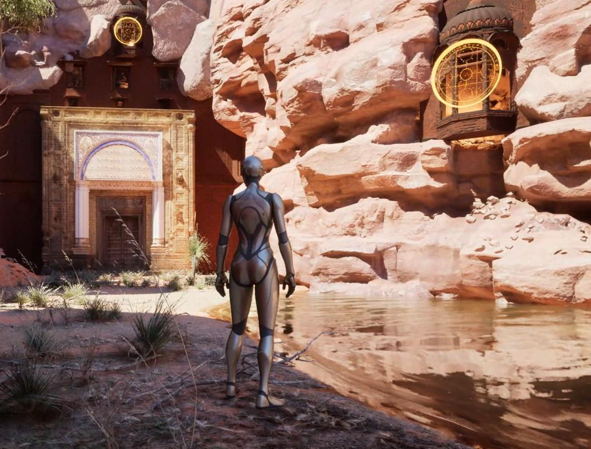

Playable UE5 Environment with Transitions
A playable Unreal Engine 5 level built around one interactive centerpiece — a magic door, modeled from scratch and wired up as a real gameplay transition.

The level itself is assembled from Fab store assets, arranged into a cohesive, atmospheric space. The one thing that isn't off-the-shelf is the door: a base mesh built in Blender, then brought into Unreal Engine and rigged as a functioning interactive element — its sigils and floating spell effects animated in Sequencer so the transition reads as a real, cinematic gameplay beat rather than a static prop.
Below: the player character stepping up to the door from inside the canyon it opens onto.

In motion: the door sequence itself, then a walk through a different, wetter corner of the same level — the atmosphere work extends past the door to the rest of the space.